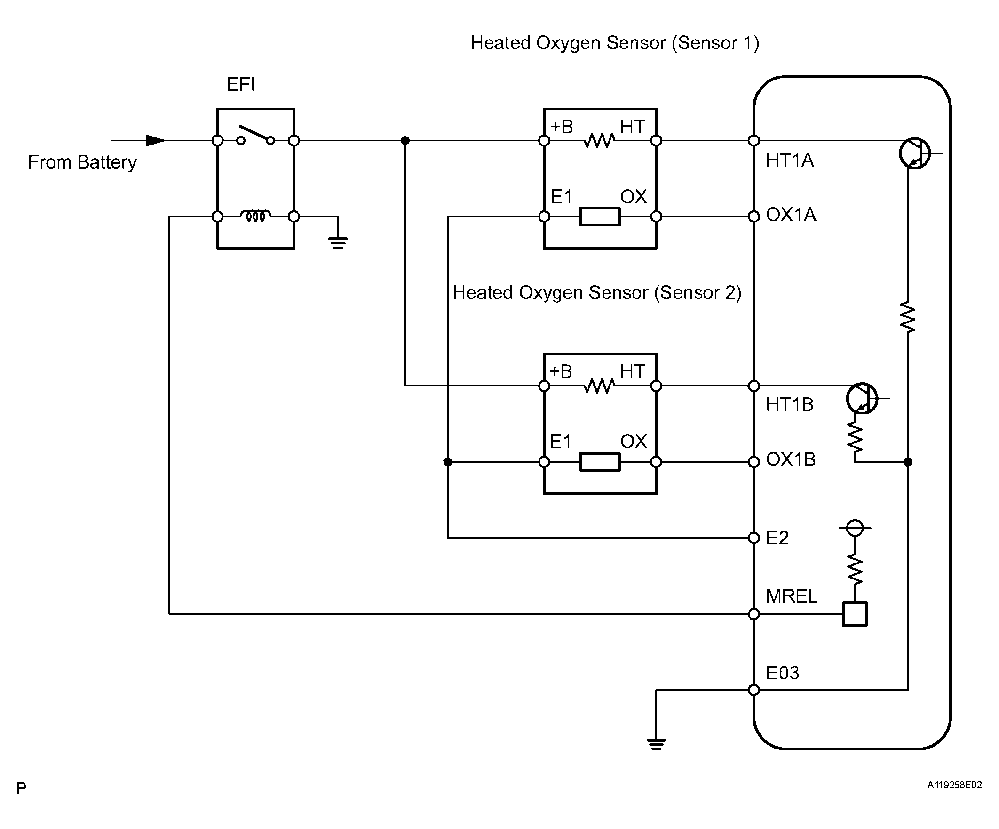

DTC P0130 Oxygen Sensor Circuit Malfunction (Bank 1 Sensor 1); DTC P2195 Oxygen Sensor Signal Stuck Lean (Bank 1 Sensor 1); DTC P2196 Oxygen Sensor Signal Stuck Rich (Bank 1 Sensor 1): Wiring Diagram

Courtesy of © TOYOTA, LICENSE AGREEMENT TMS1002